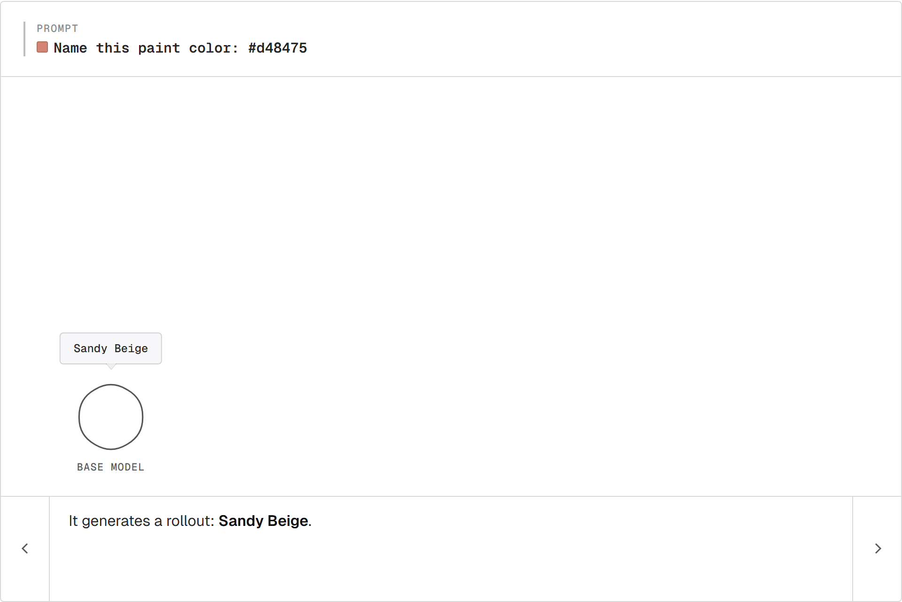
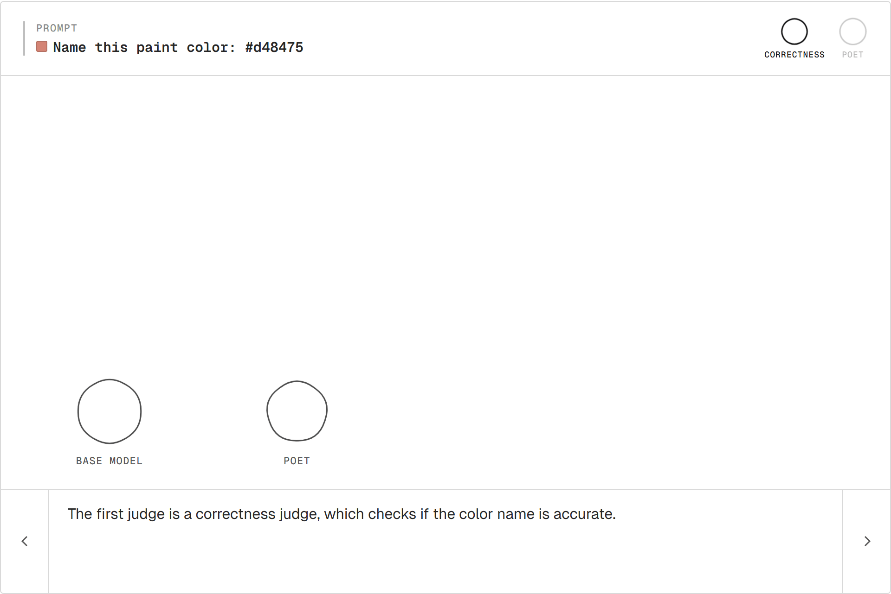
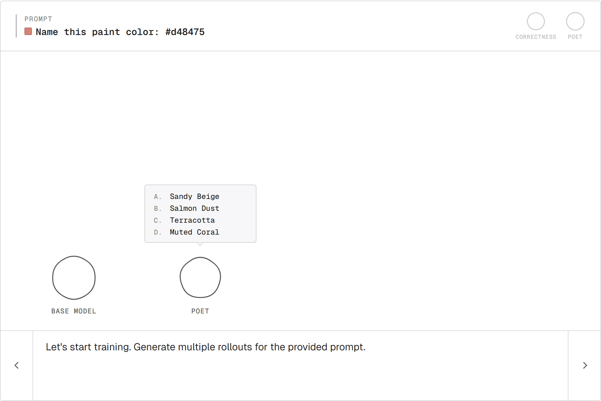
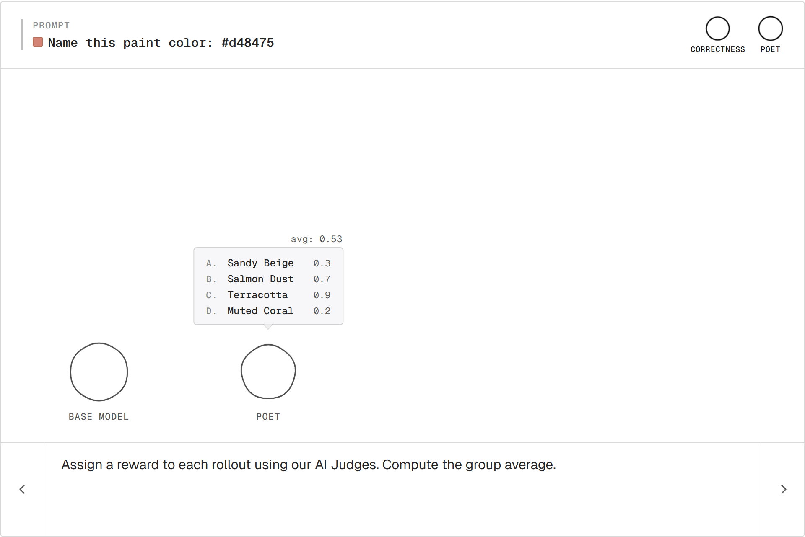
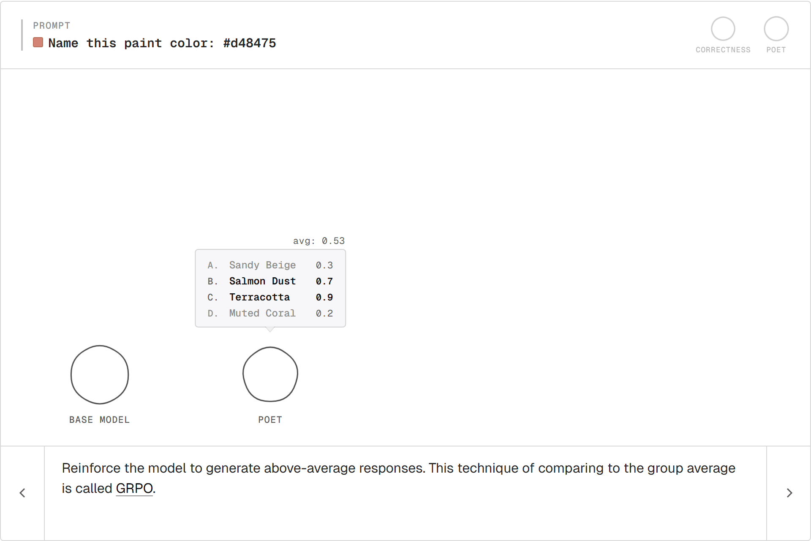
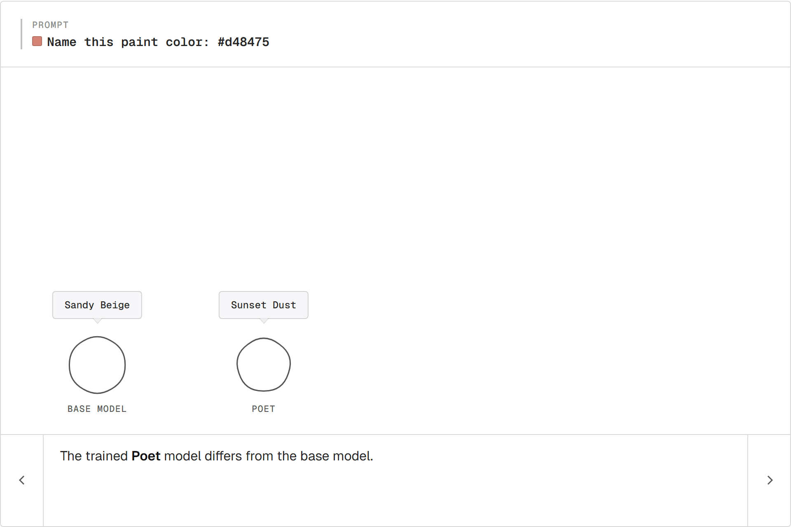
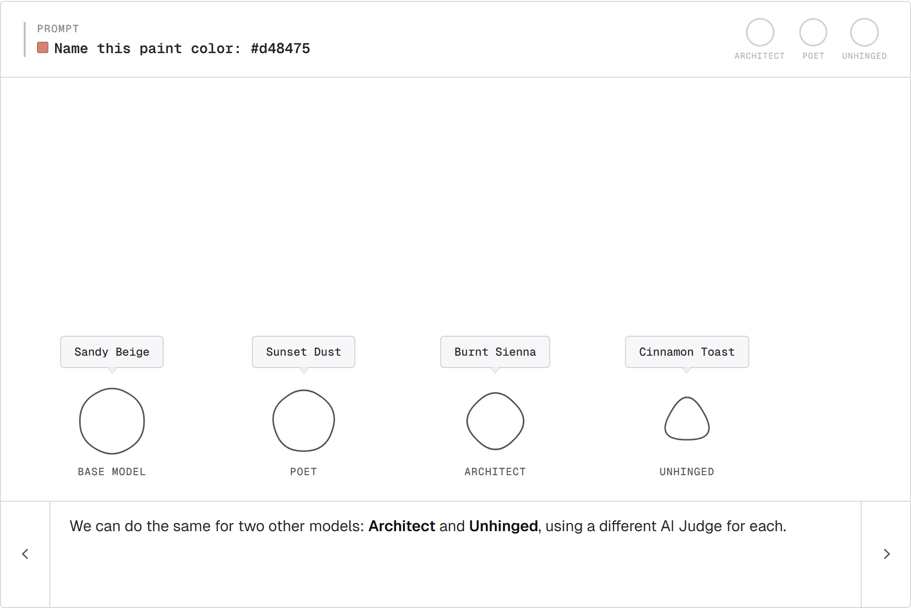
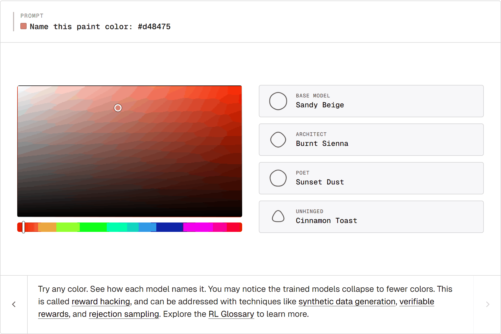

Reinforcement Learning, Visualized
Reinforcement learning trains a model from rewards. A model generates a few outputs for a prompt, a reward is assigned to each one, and the model is updated toward the better ones.
Let's walk through how it works step-by-step with an example.
The task
The model is a base LLM. It's tasked with naming paint colors:
Name this paint color: #d48475
There's no single right answer. Two people can disagree about whether "Sunset Dust" beats "Sandy Beige" and both be right. We'll use RL to train the model toward different tastes.
Rollout
The model generates one output for the prompt. That single output is called a rollout.
For #d48475, the base model says Sandy Beige.

Reward
To train, we need a signal: this output was good or this one wasn't. That signal is the reward.
A reward is anything that takes a model output and produces a number. Where the number comes from is open:
- A human ranking outputs (the basis for RLHF).
- A unit test that passes or fails, or any other rule-based check (RLVR).
- Another model entirely (RLAIF).
For our judges, we'll use another LLM as the scorer. This pattern is called LLM-as-a-judge.
The Poet judge asks: does the name evoke something? "Sunset Dust" scores higher than "Sandy Beige."
Poet alone has a problem. Reward "Banana" for a red and the model drifts. A second judge guards against that:
- Correctness. Does the name actually describe
#d48475?

The two scores combine into one reward per rollout.
Sampling a group
One rollout on its own isn't enough to learn from. Generating several samples for the same prompt gives a group of rollouts.

The variation across the group is what RL works with.
Scoring
Each rollout goes through the judges. Each comes back with a number.

The group average is the bar. Above is good, below is bad, both relative to this prompt.
GRPO
Push the model toward above-average rollouts, away from below-average ones.

This is GRPO (Group Relative Policy Optimization). Each rollout's reward gets compared to the group's average. Recent variants like GSPO and DAPO are refinements on the same core loop.
The Poet

The base model still says "Sandy Beige." The trained copy says "Sunset Dust." Nobody wrote a "be more poetic" rule. The Poet rewarded poetic outputs; the model followed.
Three painters
The same recipe with two more judges:
- Architect rewards terse, material-led names. Pulls toward "Burnt Sienna."
- Unhinged rewards vivid, off-register names. Pulls toward "Cinnamon Toast."
Same base model. Three different judges. Three trained painters.

Reward hacking
The Unhinged painter collapses onto a handful of names. Most reds become "Mulled Wine." Most warm tones become "Cinnamon Toast."

This is reward hacking. "Mulled Wine" scores high with the Unhinged judge for most reds, so the model just says it for anything red-ish. The judge can't tell the difference; the model takes the shortcut. (Goodhart's law: when a measure becomes a target, it stops being a good measure.)
Potential fixes:
- Synthetic data for broader prompt coverage.
- Verifiable rewards when an answer can be checked exactly. Common in math and code.
- Rejection sampling to filter the worst outputs before they reach the loss.
Closing thoughts
A reward and a loop. That's RL.
Three judges produced three painters. Anything you can score becomes a training signal: math, code, conversation. Same loop, different reward.
Want to learn more about RL? Explore the RL Glossary